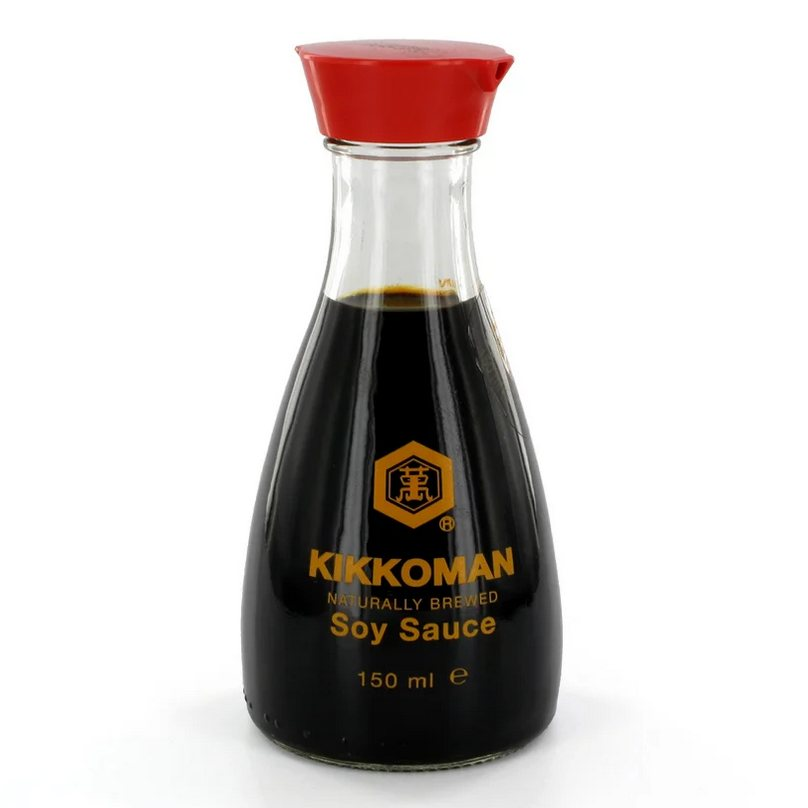
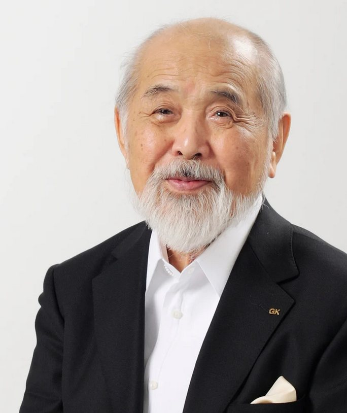
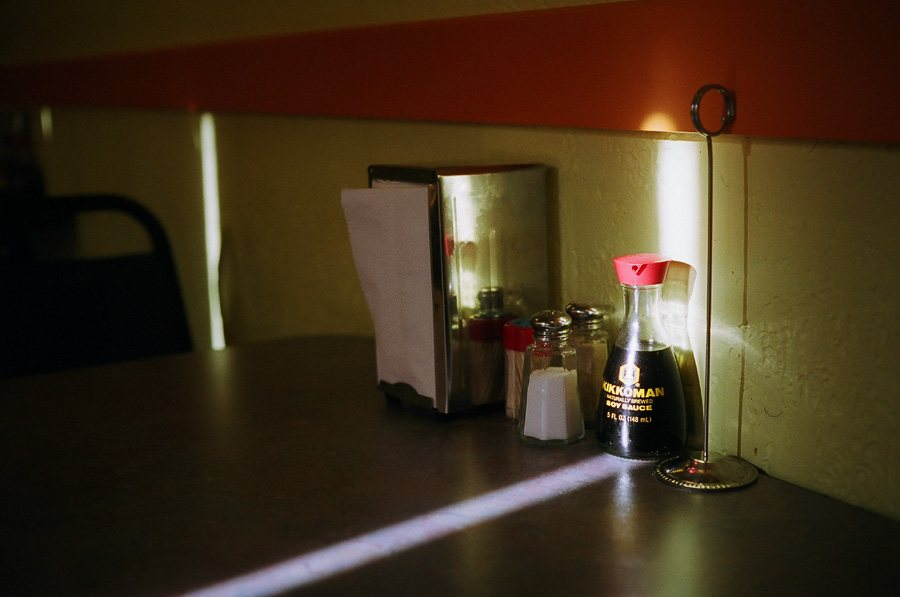
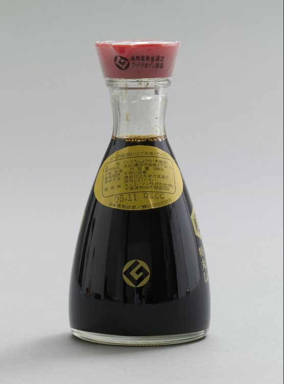
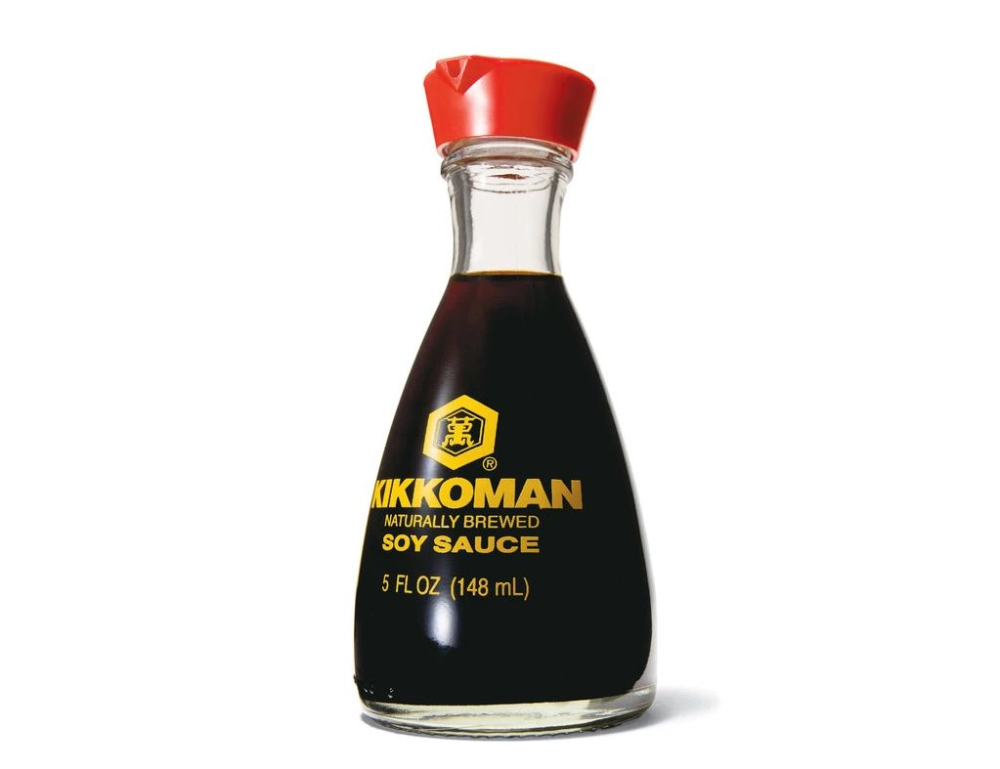

Sometimes small, simple objects can be the most challenging to design, but can provide the biggest payoff.
In 1961, Kenji Ekuan, and his team at GK Industrial Design Lab were tasked with redesigning the traditional Soy Sauce bottle for Kikkoman. Earlier, Soy Sauce was sold in large, cumbersome 1.6 liter bottles. He set out to create a bottle that would both fulfill the basic function of dispensing Soy Sauce, but also look beautiful.
The challenge with designing a package for Soy sauce is that the sauce itself has very low viscosity, compared to say, ketchup. This often leads to pooling at the spout, which in turn can lead to drips. Ekuan and his team went through countless concepts to find a solution. His search ended with an inverse angle on the spout, to ensure any remaining fluid flowed back into the bottle. The spout detail was only a part of the design though, as he combined it with a number of visual touches.
The choice of glass, to see how much is left, is a seemingly obvious choice, but one that many manufacturers still ignore today. The smooth shape, tapered at the neck makes it easy to hold, ensures the sauce flows easily, and gives the bottle a distinct, instantly recognizable look. And the cherry on top? The bright red colored cap provides a visual highlight.
The unique shape of the bottle proved to be a success for Kikkoman, and today, more than half a century later, is still produced by the millions, and is still as beautifully functional. MoMA honored Ekuan's design by including it in their permanent design collection.

Ekuan continued to create great designs, from logos (Mini Stop) to trains (the E3 series Shinkansen) to motorcycles (the Yamaha V-Max). He even experimented with radical housing and city planning projects, such as his Pumpkin House designs. As president of the Japan Industrial Designers' Association, and later the International Council of Societies of Industrial Design, he spent time promoting design, and was a strong proponent of democratized design (i.e. good design that is meant for the masses to enjoy, as compared to only one-off or luxury goods)

His drive to create stemmed from childhood experiences. As a young man, he witnessed the atomic bombing of Hiroshima, a disaster that took the lives of his sister and father. That experience motivated him to become a "Creator of Things". Which he successfully did till his death in 2015, at the age of 85. He also believed that much like people, objects and designs grow old and outdated. But his design for Kikkoman has endured for years, and probably still has quite a few left in it.
For more information on Ekuan, read this NY Times article, visit his Wikipedia page, or check out the MoMA entry on the Kikkoman soy sauce bottle.


